Transformer笔记-李沐精讲
Transformer被认为是继MLP、CNN、RNN之后的第四大类模型，可以将这一类模型成为基础模型。
1. 摘要
在主流的序列转录模型里面，所谓的序列转录模型就是我给你一个序列，你生成另一个序列。机器翻译说给一句英文或中文，当然是一个序列转录模型。这种模型主要依赖于复杂的循环或卷积神经网络，它一般是用encoder和decoder的架构，这句话意思是说，你多多少少知道这个模型的encoder、decoder架构是什么样子，CNN是RNN是什么样子，你得假设知道。第二句话是说，在性能最好的这些模型里面，通常会在编码器和解码器使用注意力机制，这篇文章讲的是要做序列到序列的生成，但现在主流的模型是干什么东西。第三句话是我这篇文章提出了一个新的简单架构，只要结果好，大家还是挺喜欢简单的架构。我们之前讲的resnet也是简单架构，大家挺喜欢的，这也是整个研究氛围的转变。他说这个模型的名字叫Transformer，中文翻译叫做变形金刚，这也是比较有意思的取名方法。接着说，这个模型仅依赖注意力机制，没有用之前的循环或卷积，这就是它的贡献。他提出了一个新的模型，简单，跟之前表现很好的模型架构长得不一样。接着我做了两个机器翻译实验，显示这个模型性能特别好，可以并行度更好，使用更少时间训练，我的模型达到了28.4的bleu score, bleu score是机器翻译里经常用的衡量标准。如果不做机器翻译，可能不明白blue score是干什么。但没关系，他说我在英语到德语的翻译工作，我们比目前最好的结果好了两个bleu，在英语到法语的翻译任务上做了一个单模型，比所有模型的效果要好。它只在8个GPU上训练了3.5天。最后说我的Transformer架构，能够泛化到别的任务都很好，基本上可以说我提出了一个新的模型，主要用在机器翻译任务上。所以这篇文章一开始是针对机器翻译这个小任务写的。写作时假设你前面的东西都知道。然后我提出一个模型，结果在机器翻译上很好，这也是比较有意思的工作。他一开始做的是机器翻译这个相对小一点的领域，因为机器翻译就那么几家公司关心，能提供机器翻译服务的公司，全世界也就那么多家。但随着BERT、GPT把架构应用在更多自然语言处理任务上，整个工作就出圈了。最近大家都知道用在图片、video上，几乎上东西都能用。所以这篇文章真正火出圈。但你第一次读这个文章时，可能看到机器翻译这一块，你可能不那么感兴趣。当然了，现在我们知道这篇文章非常重要。
2. 结论
第一句话是说，我们介绍了Transformer这个模型，这是第一个做序列转录的模型，仅仅使用注意力，把所有循环层都换成了multi head self-attention。基本上可以看到这篇文章主要用的是这样的层。第二句话是说，在机器翻译任务上，Transformer能训练得比其他架构都要快很多，而且在实际结果上，确实效果比较好。第三段说他对这种纯基于注意力机制的模型感到非常激动，想用在别的任务上，比如文本以外的数据，包括图片，语音和视频，使得生成不那么时序化也是另一个研究方向。其实现在看起来，作者多多少少预测了未来。Transformer在各种别的数据上做得比较好。虽然这些工作基本不是本文作者完成的，都是由别人完成的，但本文的作者基本上是看准了大方向的。最后一句话是说，这篇文章所有代码放在tensor2tensor这个库里面，这也是比较有意思的写法，它把整个代码放在了结论的最后。但是现在我们知道，如果你有代码的话，通常你会把这个代码放在你摘要的最后一句话，因为现在神经网络的文章里面细节通常是比较多的，简简单单单的一篇文章很难把所有的细节写清楚，所以你最好第一时间公布你的代码，让别人能够很方便地重复你的文章，然后这样能扩大你文章的影响力。
3. 导言
在时序模型里面，当前最常用的是2017年发布的RNN，然后它包括了LSTM、GRU等。在这里面有两个比较主流的模型，一个叫做语言模型，另外一个是当你的输出结构化信息比较多的时候，大家会用一个编码器和解码器的架构。
RNN的特点（缺点）是什么？在RNN里，给你一个序列，它的计算是把这个序列从左往右移一步一步往前做，假设你的序列是一个句子的话，它就是一个词一个词地看。对第t个词，它会计算一个输出叫做隐藏状态 ，然后它的 是由前面一个词的隐藏状态 和当前第t个词本身决定的，这样就可以把前面学到的历史信息通过 放到当下，然后和当前的词做一些计算，然后得到输出。这也是RNN如何能够有效处理时序信息的一个关键所在，它把之前的信息全部放在隐藏状态里面，然后一个一个放下去。但它的问题也来自于这里，第一个是它是一个时序（一步一步计算的过程）它比较难以并行，就是说你在算第t个词的时候，算 的出处的时候，必须要保证前面那个 输入完成了，假设你的句子有100个词的话，你就得时序地算100步，导致在时间上无法并行。现在在主流的GPU和加速器TPU上（有成千上万个线程），你无法在这个上面并行的话，导致你的并行度比较低，使得你在计算上性能比较差。第二个也是因为这个原因，历史信息是一步一步往后传递的，如果你的时序比较长的话，那么你在很早期的那些时序信息在后面的时候可能会丢掉。如果不想丢掉的话，你的 要比较大， 你得做个比较大的 ，但是这样的话你在每一个时间步都得把它存下来，会导致内存开销非常大。在这些方面，有很多研究都在做改进，比如并行的改进、分解的方法使得我们能够提升并行度，但是本质上还是没有解决太多问题。
第三段讲Attention在RNN上的应用，在这篇文章之前attention就已经被成功用在编码器和解码器里面了，它主要是用在怎么把编码器的东西很好地传给解码器，主要是和RNN是一起使用的。
本文提出了一个新的模型Transformer，不再使用之前的循环神经层，而是纯基于注意力机制了。之前攻击的痛点是时序神经网络要按时序地做运算，现在做了attention之后可以完全地做并行。因为纯用attention所以它的并行度是比较高的，这样就能在比较短的时间内跟之前比更好的结果。
4. 相关工作
第一段讲如何使用卷积神经网络来替换掉你的循环神经网络，减少你的时序计算，提到了ByteNet和ConvS2S等工作。这些工作主要的问题是用卷积神经网络对比较长的序列难以建模，这是因为卷积做计算的时候，每一次它去看一个比较小的窗口（eg. 3x3的像素块）如果两个像素隔得比较远，得需要用很多层卷积一层一层上去才能够最后把这两个隔得远的像素融合起来，如果使用Transformer里的注意力机制，每一次能看到所有像素，一层就能够把整个序列看到。但卷积比较好的地方是可以做多个输出通道，一个输出通道可以认为它可以去识别不一样的模式，它也想要这样的多输出通道的效果，所以提出了Multi-Head来模拟卷积神经网络多输出通道的效果。（不同卷积核可以提取不同的特征）
自注意力机制在本文工作里很重要，但它在之前的工作中就已经有了。还提了一下2017年的重点工作memory network。
在目前所知中，Transformer是第一个只依赖于自注意力来做encoder-decoder架构的模型。
这一部分要讲清楚跟你论文相关的那些论文是谁，跟你的联系是什么，以及你跟他们的区别是什么。
5. 模型
深度神经网络里最重要的一章。 这些序列模型里面，现在比较好的是一个叫做编码器-解码器的架构，对编码器来讲，它会将一个长为n的输入 表示成 对于每个 它对应的是 的一个向量表示。如果是一个句子，那么 就表示第t个词的一个向量的表示，这就是编码器的输出。这就将原始的一些输入，变成了一个机器学习可以理解的一系列的向量。对解码器来讲，会拿到编码器的输出 ，然后生成一个长为m的序列 。n和m不一定是一样长的，例如做英文句子翻译成中文句子，两个句子很有可能是不一样长的。解码器跟编码器的一个大的不一样的点在于在解码器里，你的词是一个一个生成的，因为对编码器来讲很有可能是一次性能看全整个句子，例如做翻译的时候可以把整个英语的句子给你，但是在解码的时候只能一个一个的生成，这个东西叫做自回归auto-regressive的模型，在这里你的输入又是你的输出，比如最开始给定一个 ，你要输出一个 ，在拿到 之后就可以去生成 ，然后一般来说你要生成 的话你要把之前所有的 到 全部拿到。也就是翻译的时候是一个词一个词地往外蹦。所以说你在过去时刻的输出也会作为你当前时刻的输入，这个叫做自回归。（注意力机制是并行的，而不是解码器并行计算）
Transformer是使用了一个编码器-解码器的架构，具体来说是将一些自注意力和point-wise、fully connected layers一个一个堆在一起。架构如下：
写论文有一个能够把整个全局画清除的漂亮图片是很重要的。
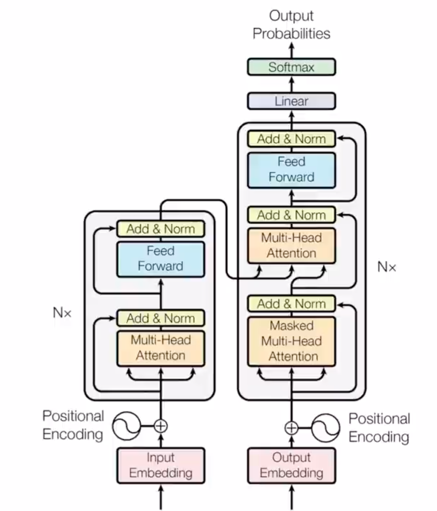
5-1. 编码器
编码器是用一个N=6的完全一样的层，每个层里有两个子层， 第一个子层叫Multi-head self-attention，第二个子层是一个简单的位置域的全连接层（MLP）。对于每一个子层都用了一个残差链接，最后加入了一个layer normalization。 这个子层写成公式就是 ，由于残差连接需要输入和输出是一样大小，如果不一样大小需要做投影。为了简单起见，就把每一层的输出的维度变成512，也就是说对于每个词不管在哪一层，都做了512的长度的表示。这个和我们前面的CNN是不一样的，或者我们前面做MLP的时候经常会把维度要么往下减，要么CNN是空间维度往下减但是channel维度往上拉。而这里做了固定长度表示，使得模型相对来说更简单。调参也就调这个维度数 和 。所以这个简单设计影响到后面一系列网络，BERT、GPT都是这两个超参数可以调整，需要多少层，每一层里的维度有多大。
LayerNorm（如果这里用了别人的技术也是要简单解释一下是什么的，免得要点开引用文献去阅读），接下来和BatchNorm对比解释什么是LayerNorm，以及为什么在这些变长的应用里不使用BatchNorm。
feature是一个词的向量表示（512），seq（维度是d）是你这一句话里有多少个词，batch是一共几句话。
BatchNorm看着一批人同一门课程的成绩分布。LayerNorm：看一个人自己所有科目的成绩分布。
LayerNormalization关注于样本自身结构之间的关系，学习内部结构的特征；而BatchNormalization是关注于突出样本之间的不同，学习样本之间的差异。
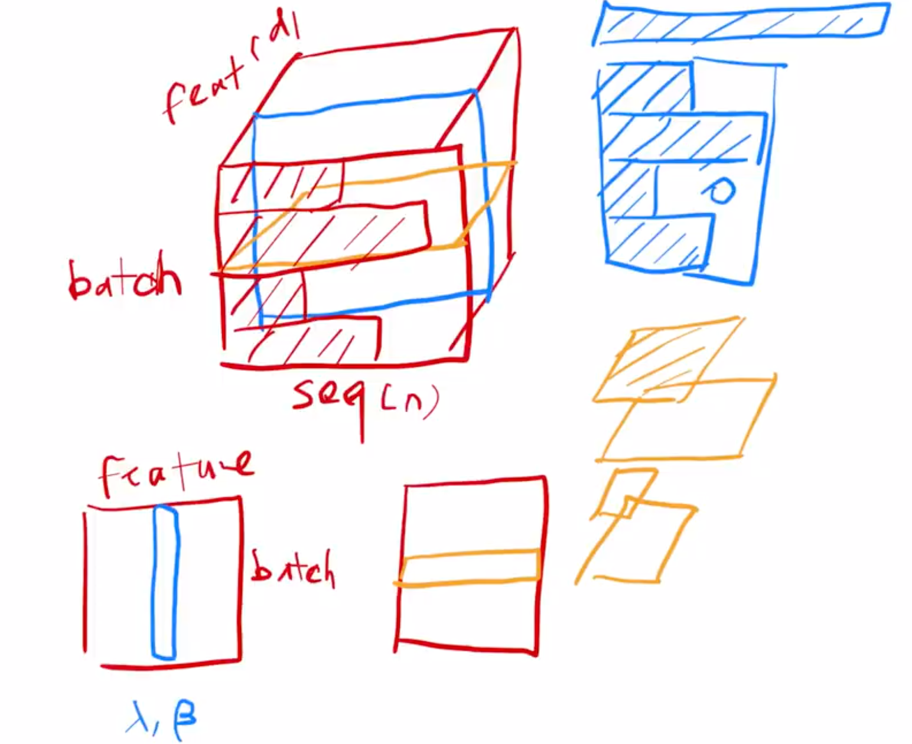
【蓝色】考虑一个最简单的二维输入的情况，输入是一个矩阵，每一行是样本x，每一列是特征，BatchNorm干的事情就是每一次去把每一个列（特征）在一个小mini-batch里面把它的均值变成0方差变成1。怎么把一个向量变成均值为0方差为1呢？你把这个向量本身的均值减掉，然后再除以它的方差就行了。这里你算均值的时候是在每一个小批量里面，也就是这条向量里面算出它的一个均值，算出它的一个方差。这个是在训练的时候你可以做小批量，在预测的时候你会把全局的一个均值给算出来，这个你认为是以整个数据扫一遍之后，在所有数据上那些平均的均值和方差存起来，在预测的时候再使用。batchnorm还会去学一个 和 ，就是说可以把这个向量通过学习可以放成一个任意方差为某个值均值为某个值的一个东西。Layernorm和BatchNorm在很多时候是几乎一样的，除了做的方法有点不一样之外。【黄色】如果同样是一个二维输入，LayerNorm就是对每个样本x做Normalization，而不是对每个特征做。现在是把每个行变成均值为0方差为1。你可以认为LayerNorm就是把数据转置一下，放到BatchNorm里面出来的结果再转置回去一下，基本上就可以得到自己的东西了。
在Transformer和正常的RNN里，它的输入是三维的东西，因为它输入的是一个序列的样本，就是每一个样本其实里面有很多个元素，它是一个序列，例如给一个句子里面有n个词，所以每个词有个向量的话，还有一个batch的话，就是一个3D的东西。【蓝色】如果还是用BatchNorm，每次是取一根特征，然后把它的每个样本里的所有序列的元素以及它的整个batch全部搞出来，把它的均值变成0方差变成1，也就是说切出蓝色的块然后拉成一个向量然后跟之前做一样的运算。 【黄色】如果是LayerNorm就是对每个样本横着切一下，两种切法不一样会带来不同的结果。具体来说为什么LayerNorm用得多点？一个原因是在时序的这些序列模型里面，你的每个样本的长度可能会发生变化，比如红色画的那样，不同的句子可能长度不同，没有的部分用0填充，这两种切法会导致不同的结果。这里主要的问题是在算均值和方差上面，对于BatchNorm来说是通过蓝色阴影值部分的有效值来计算的，别的值没有太多用。你会发现如果你的样本长度变化比较大的时候，你每次做小批量的时候算出来的均值方差它的抖动相对来说是比较大的。另一个问题是说，在做预测的时候我们要把全局的均值和方差记录下来， 那么这个全局的均值和方差如果碰到一个新的预测样本如果特别特别长怎么办？是不是有可能在训练的时候没见过伸出去那么多的，那么在之前算的均值和方差很有可能是不那么好用的。反过来将对于LayerNorm相对来说没有太多这个问题，是因为它对每个样本算自己的均值和方差，也不需要存下一个全局的均值方差 ，因为这东西是对每个样本来做的，所以不管样本是长还是短，反正算均值是在自己里面算的，相对来说它稳定一些。也可以去看LayerNorm那篇文章是这么解释的。
但实际可能一个很好用的东西它自己写的东西可能和之后大家理解的是不一样的，在之后又有一篇文章来解释为什么LayerNorm有效，更多是从一个对梯度，对于shur那些normalization来提升它的 利普希茨常数来解释的。
5-2. 解码器
N=6，每个层里面和编码器一样有两个一样的子层，不一样的在于解码器里用了一个第三个子层，它同样是一个多头注意力机制，跟编码器一样同样地用了残差连接，我们用了LayerNorm。另一个是在解码器里做的是一个自回归，也就是当前的输入集是之前一些时刻的输出，也意味着在做预测的时候，看不到之后的那些时刻的输出。但是在注意力机制里面，它每一次都能看到整个完整的输入，所以这个地方我们要避免这个情况的发生，也就是说，在解码器训练的时候，在预测第t个时刻的输出的时候，你不应该看到t时刻以后的那些输入。它的做法是通过一个带掩码的注意力机制，保证输入进来的时候再t时刻不会看到t时刻以后的那些输入，从而保证训练和预测的时候行为是一致的。
看完编码器和解码器架构之后， 接下来看每个子层具体是怎么定义的。
5-3. 注意力层
注意力函数式一个将一个query和一些key-value对映射成一个输出的函数。query/key/value/output都是一些向量。具体来说你的output是你的value的加权和，所以你的输出的维度和你value的维度是一样的。权重是怎么来的呢？对于每一个value的权重是value对应的key和查询query的相似度算来的。这个相似度，也就是compatibility function不同的注意力机制有不同的算法，简单示意图如下：
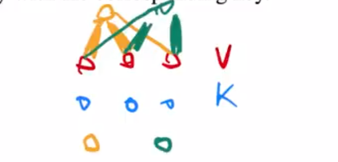
虽然key value没有变，但是随着query的改变，因为权重的分配不一样就会导致你的输出会有不一样，这就是注意力机制。因为不同的相似函数导致不一样的注意力版本，所以接下来的就是Transformer自己用到的这个注意力计算方式，叫做scaled dot-product attention，这是最简单的注意力机制。
5-3-1. Scaled Dot-product Attention
规定输入的query和key是等长的（因为可以不等长，不等长是有别的方法计算的），都是 ，value的长度是 ，你的输出也会是 。对每个query和key做内积作为相似度，如果两个向量的模长是一样的话，如果两个值的内积越大，就是它的余弦值越大，就表示这两个向量的相似度就越高，如果内积等于0，说明两个向量是正交的，就是没有相似度。算出来之后再除以向量长度 （LayerNorm后的向量长度等于根号下维数）。然后再用一个softmax来得到n个非负的加起来为1的权重（假设给n个key-value pair，就会算出n个值），然后把这些权重作用在value上就会得到输出。在实际中肯定不会一个一个做运算，这样会很慢。
把query和key写成一个矩阵，query和key的个数可以不一样，但是长度一定一样的，这样才能做内积。Q转置之后再和后面的相乘。 蓝色的线就是一个query对所有key的一个内积值，然后再除以 ，再对每一行做softmax，行与行之间是独立的，这样就可以得到权重，然后再乘以V 得到一个 的结果，里面每一行都是我们要的输出。通过两次矩阵乘法就可以完成，极大加速运算，矩阵乘法是一个很好并行的东西。
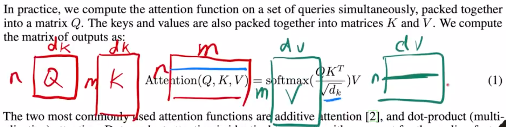
本文提出的注意力机制和其他注意力机制的不同。一般有两种比较常见的注意力机制，一种是加型的注意力机制，可以处理query和key不等长的情况，另一种叫做点积的注意力机制，点积注意力机制和本文的注意力机制是一样的，除了这里多除了一个 之外，所以会叫scaled。这两种注意力机制其实都差不多，但是点乘实现起来比较容易而且比较高效，因为两次矩阵乘法就能算好。但是为什么不直接用最简单的点乘注意力 要除以 ？ 当 不是很大的时候，除不除都没关系，但是当 比较大的时候，也就是两个向量长度比较长的时候，做点积的时候值可能会比较大或者比较小，当值相对来说比较大的时候，相对的那些差距就会变大，就会导致你值最大的那个值做出来softmax会更加靠近1，剩下那些值就会更靠近0，你的值会更向两端靠近（两极分化，方差大）。出现这样的情况时，算梯度的时候会发现梯度比较小，因为softmax最后的结果会希望预测值置信的地方更靠近1，不置信的地方尽量靠近0，这样就收敛得差不多了，这时候你的梯度就会变得比较小，你就会跑不动。所以作者说在Transformer里一般用的 比较大，之前说过是512，所以除以 是一个不错的选择。【解决梯度消失问题】
softmax是指数函数，会把权值之间的差异急剧放大，大权重压制小权重，出现尖锐图像，不利于网络稳定性，因此需要缩放。
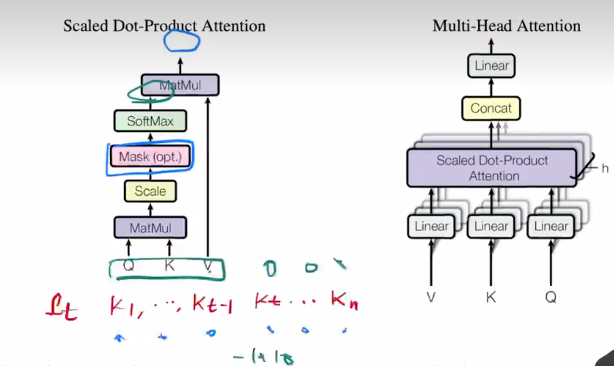
对于注意力机制来说 会和所有k里的东西做运算， 算其实还是可以算的，只要在计算权重的时候不要用到 时刻之后的东西，加一个mask，【绿色】把之后的那些值换成非常大的负数，进入softmax做指数之后就会变成0，这样计算output的时候就只会用到 。所以这个mask的效果就是在训练的时候，让第t个时间的query只看对应的前面那些key-value pair，使得做预测的时候跟现在这个是能一一对应上的。
5-3-4. Multi-head Attention
与其做一个单个的注意力函数，不如把整个query、key、value投影到一个低维，投影h次，然后再做h次的注意力函数，然后把每一个函数的输出并在一起，然后再投影回来会得到最终的输出。
为什么要做多头注意力机制呢？回过头看Scaled Dot-product Attention会发现里面没有什么可以学习的参数，你的距离函数就是你的内积，但有时候为了识别不一样的那些模式， 希望能有一些不一样的计算像素的办法。如果用的是加型的attention的话，那里面还是有一个权重可以学习的，你也许可以学到这些东西。但如果用点积的attention 的话，就先投影到一个低维，投影的W是可以学的，也就是给你h次机会，希望能学到不一样的投影方法使得投影进去的那个度量空间里能够去匹配不同模式它需要的一些相似函数，最后把这些东西合并回来再做一次投影。有点像在卷积网络里面有多个输出通道的感觉。（一个头处理一小部分特征维度）
h=8，在做注意力的时候，因为有残差连接的存在，输入和输出的维度要是一样的，所以投影的就是输出维度/h，就是每一次我们会把它投影到512/8=64维的维度上算注意力函数，再投影回来。
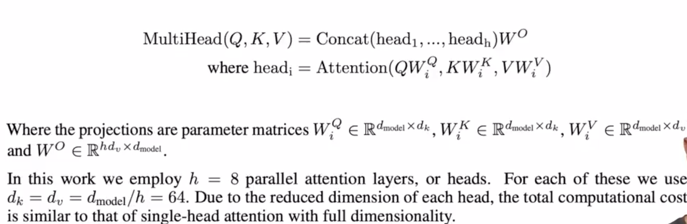
BERT：如何把超参数换算成可学习参数的大小
Transformer里可学习的参数来源于两个：嵌入层和Transformer块
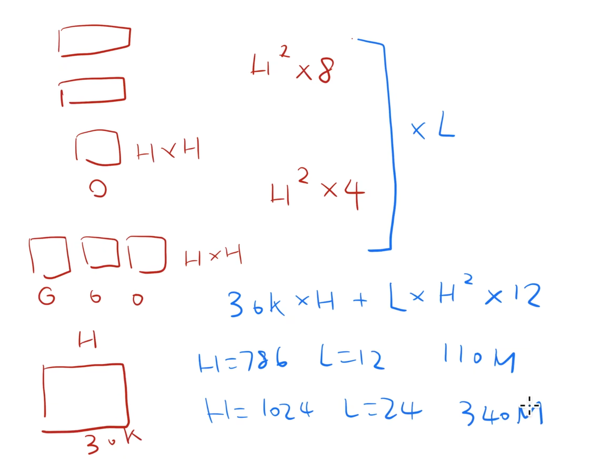
嵌入层就是一个矩阵，它的输入是字典的大小，我们字典大小这里是3万，就是30K。你的输出等于你的隐藏单元的个数就是H。总参数量是。
它的输入会进入你的Transformer块，Transformer块里面有两个东西，一个是自注意力机制，一个是后面的MLP。自注意力机制本身是没有可学习参数的，但是对多头注意力，会把你所有的K、V、Q分别做一次投影，然后每次投影它的维度是等于64，然后因为你有各个头，头的个数A×64是等于H的，所以在这个地方，进来的话，有一个key，有一个value，有一个Q，它们都会有自己的投影矩阵，这个投影矩阵在每个头之间，你把它合并起来，它其实就是一个H×H的一个矩阵了。同样道理，拿到输出之后，还会做一次投影，同样道理，它也是一个H×H的东西。所以对一个Transformer块，它的自注意力，它可学习的参数是。
然后再往上是MLP，MLP里面是有两个全连接层，第一个层的输入是H，但是它的输出是一个4×H的东西。另外一个全连接层的输入是4×H，但是它的输出是H，所以每一个矩阵它的大小是H×4H。所以两个就是。
这两个东西加起来是你一个Transformer块里面的参数，然后你还要乘以L。
5-3-5. Transformer里如何使用注意力
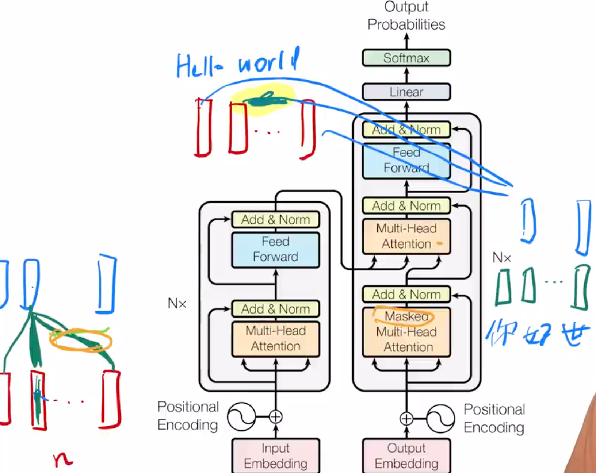
黄色这个东西表示的是注意力的层，一共有三种不一样的注意力层，然后它的输入和输出分别是什么？首先，先看一下编码器的注意力是在干什么事情。编码器的输入，假设你的句子长度是n的话，它的输入其实是一个n个长为d的向量。假设我们的batch size设成1了，每一个输入它的词对应的是一个长为d的向量，一共有n个这样的东西。然后注意力层它有3个输入，它分别表示的是key、value和query，这个地方是一根线过来，然后它复制成了三下，意思就是说，同样一个东西，既作为key，也作为value，也作为query，所以这个东西叫做自注意力机制，就是说你的key、value和que其实就是一个东西，就是自己本身，然后我们知道这个地方我们输入了n个query，那么每一个query会拿到一个输出，那么意味着会有n个输出。而且这个输出和value，因为长度是一样的话，那么我的输出的维度其实也是那个d，就是意味着输出也是跟它长度一样长为N的一个东西。对每一个query，我会计算一个这样的输出，因为我们知道这个输出，其实就是value的一个加权和，权重是来自于query和key的一些东西。但它本身是一个东西，那么就意味着是说他的这个东西呢，实际上本身就是你的输入的一个加权的一个和，这个绿色线代表权重的话，因为这个权重其实本身就是这一个向量，这个向量跟每一个输入的别的向量计算相似度，那么它跟自己算肯定是最大的，就是说你这个线肯定是最粗的啊。假设这个线跟你最这边这个向量也相似度比较高的话，那么这个权重也会稍微高一点，假设我们不考虑多头和有投影的情况，你的输出其实就是你的输入的一个加权和。你的权重来自于你自己本身跟各个向量之间的一个相似度。但如果有多头的话，因为有投影，其实我们在这个地方会学习h个不一样的具体空间出来，使得你出来的东西当然是会有一点点不一样，这个就是第一个注意力层是如何用的。
解码器是一回事，它这个地方一样的是一个东西过来，然后复制成了3次。然后解码器的输入也是一样的，只是长度可能变成了一个长为m的样子。然后维度其实也是一样的，所以它跟编码器是一样的自注意力。唯一不一样的是，这里有个mask在解码器中，比如说，你算这一个query它对应的输出的时候，它是不应该看后面那些东西。所以意味着在解码器的时候，你的这些后面的东西要设成零。我们用黄色的线表示一下，就是说后面这些权重你要设成零。在解码器的时候，这就是mask的作用。
第三个注意力层，它不再是自注意力了，而是key和value来自于编码器的输出，query是来自于解码器下一个attention的输入。编码器最后一层的输出就是n个长为d的向量，解码器的mask attention的输出是m个长为d的向量。编码器的输出作为value和key进来，然后解码器下一层的输出作为query进来，意味着是说对解码器的每一个输出，作为query我要算一个我要的输出，假设我用蓝色的表示的话，输出是来自于value的一个加权和，就是来自于编码器的输出的加权和，这个权重它的粗细程度取决于我这个query跟这些东西的相似度。在这个attention干的事情其实就是去有效地把编码器里面的一些输出，根据我想要东西给他拎出来。举个具体的例子，假设你是在做英文翻译中文。假设第一个词是hello，对应的向量是这个东西。然后第二个词是Hello World的话，那么你的中文它就是第一个当是你，你好，所以你会知道说在算好的时候，如果它作为query的时候，去看hello的这个向量应该是会相近一点，给它一个比较大的权重，但是word这个是后面的次相关，我发现的word这个词跟我这个query相关度没那么高，在计算相似度的时候，就是说在算好的时候呢，我会给他一个比较大的权重在这一个上面。但是我在后面如果还有你好世界的话，如果是个是的话，那么在这个query的时候，我再去算它的输出的时候就会给第二个向量给一个比较大的一个权重出来。意味着是说根据你在解码器的时候，你的输入的不一样，那么我会去根据你的当前的那一个向量，去在编码器的输出里面去挑我感兴趣的东西，也就是注意到你感兴趣的东西，那些跟你不那么感兴趣的东西，你就可以忽略掉它。这个也是说attention是如何在编码器和解码器之间传递信息的时候起到的一个作用。
5-4. Point-wise FFN
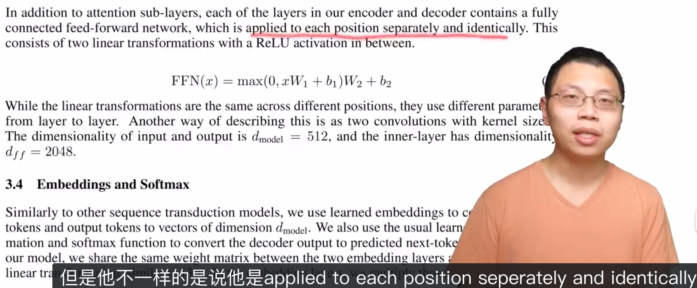
架构图中的蓝色部分就是一个MLP，输入的序列里有很多的词，每一个词就是一个点，就是那个position，把一个MLP对每一个词作用一次，然后对每个词作用的是同样一个MLP，这就是point-wise的意思，说白了就是MLP只作用在最后一个维度。W1投影把维度扩大了4倍，因为最后有一个残差连接还得投影回去，所以W2又把2048投影回了512，所以这说白了就是一个单隐藏层MLP，中间隐藏层把你的输入扩大4倍，最后输出的时候也回到输入的维度。如果用pytorch来实现，其实就是把两个线性层放在一起，不需要改任何参数，因为pytorch当你的输入是一个3D的时候默认就是在最后一个维度做计算。
Attention和RNN的区别？
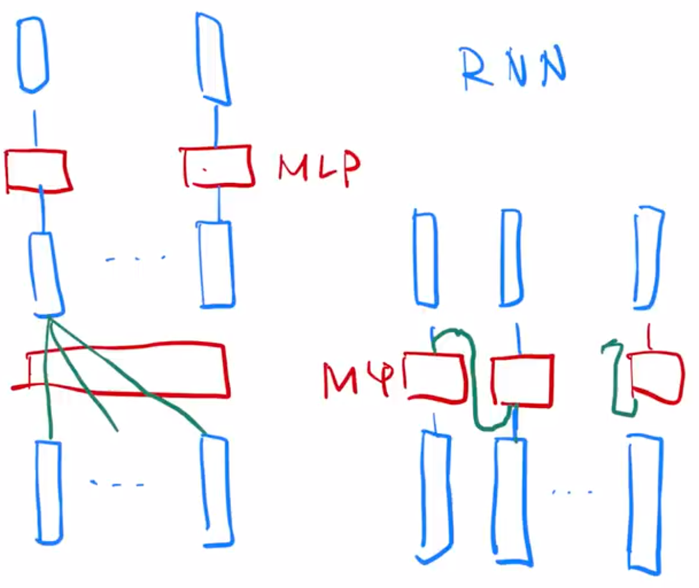
考虑一个最简单的情况，没有残差和LayerNorm，Attention是单头没有投影。输入是一个长为n的向量，在进入attention之后，会得到同样长度的输出，最简单的attention说白了就是对你的输入做一个加权的和，然后进入Point-wise MLP，每一个红色方块之间的权重是一样的，每个MLP对每一个输入的点做运算会得到一个输出，最后得到整个Transformer块的输出，输入和输出大小都是一样的。Attention起到的作用是把整个序列里面的信息抓取出来，做一次汇聚aggregation，所以这个东西就已经有了我序列中感兴趣的东西，信息已经抓取出来了，以至于在做MLP，在做投影的时候，映射成我更想要的那个语义空间的时候，因为这个东西已经含有了我的序列信息，所以每个MLP只要在对每个点独立做就行了，因为在加权的时候序列信息就已经被汇聚完成了，所以上面可以分开做。
RNN对于第一个点就是过一个没有隐藏层纯线性的MLP，第一个点直接做出去就行了，对于下一个点，还是用之前的MLP【红色】，权重是一样的，但是时序信息【绿色】 把它上一个时刻的输出放回来，跟输入一起并入进去，这样就完成了信息的传递。RNN跟Transformer一样，都用一个线性层来做语义空间的转换，但不一样的是如何传递序列的信息，RNN是把上一个时刻的信息输出传入下一个时刻做输入，但是在Transformer里面是通过一个attention层，然后再全局地拉到整个序列里面的信息，然后再用MLP做语义的转换，这是两个模式的区别，但它们的关注点都是在于如何有效地使用序列信息。
5-5. Embedding和softmax
Embedding：因为输入是一个个的词/词源/token，需要把它映射成向量，embedding就是给定任意一个词，学习一个长为d的向量来表示它，在论文这里这个，编码器要有一个embedding，解码器也要有一个embedding ，在softmax前面那个线性也需要一个embedding，这三个embedding是一样的权重，这样训练起来会简单一点。另外它把权重乘了一个 (因为在学embedding的时候，多少会把一个向量的l2long学成相对比较小的，例如1，就不管你的维度是多大，最后你的值都会等于1，也就是说你的维度一大你学到的一些权重值就会变小，但是之后加上positional encoding的时候，它不会随着长度变长，把你的long固定住。乘上了之后再和positional encoding相加的时候在一个scale上大家都差不多)。
Positional Encoding：Attention是不会有时序信息的，所以要在输入里面加入时序信息。一个词i，所在位置3，把这个3加入到输入里面。
（输出是value的一个加权和，权重是query和key之间的距离，它跟你的序列信息是无关的，即根本不会去看你的key-value对在序列里的哪些地方，也就意味着给定一句话，把顺序任意打乱之后attention出来的结果都是一样的，顺序会变但是值不会变，在处理时序问题的时候，给定一句话，把里面的词打乱之后，语义就会发生变化，所以需要加入时序信信息。RNN是怎么加的呢？上一时刻的输出作为下一时刻的输入来传递历史信息，所以它本来就是一个时序的东西。
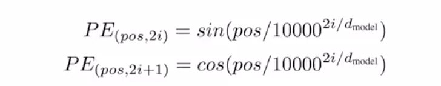
假设用一个32位的整数来表示数字，就是32个bit，每个bit上有不同的值来表示一个数字，即用一个长度为32的向量表示。现在一个词在嵌入层会表示成长为512的向量，同样用一个512长度的向量来表示一个数字（表示位置），具体的值是用周期不一样的sin和cos函数的值算出来的，所以任何一个值都可以用一个长为512的向量来表示它。这个长为512的位置向量记录了时序信息，和嵌入层相加就可以完成把时序信息加进数据。
positional encoding因为是sin和cos的函数，它是在+1~-1之间抖动的，所以input embedding * 使得每个数字也差不多在+1~-1之间。
5-6. 为什么要用自注意力
整个论文对模型的解释是比较欠缺的，基本上就是模型长什么样，相较于循环层和卷积层用自注意力有什么好处，并没有告诉你设计理念是什么。
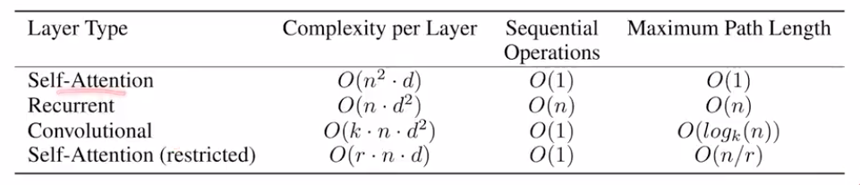
第一列是计算复杂度（越低越好），第二列是顺序的计算（越少越好），下一步计算必须要等前面多少步计算完成，在算一个Layer的时候越不要等并行度就越高，最后一列是信息从一个数据点走到另一个数据点要走多远（越短越好）。
Self-attention：n是序列的长度，d是向量的长度。整个自注意力就是几个矩阵做运算， 两个矩阵乘法的复杂度是 。矩阵里面并行度比较高O(1)，attention里面一个query可以跟所有key做运算，而且输出是所有value的一个加权和，所以任何一个query和任何一个很远的key-value pair只需要1次就能过来，所以长度是比较短的。
Recurrent：循环层，序列是乘了n的话就要一个一个做运算，每个里面主要的计算就是一个d * d的矩阵（一个dense layer）再乘以一个长为d * 1的输入(d * d * 1次)，要做n次所以是。rnn计算n次mlp (d,d)*(d,1) 。 因为要一步步做运算，所以当前时刻的词需要等待前面的完成，所以是一个长为n的序列化的操作，在并行上比较吃亏。最初点的历史信息需要到最后一个点的话需要走n步才能过去。所以rnn对特别长的序列不友好，会丢失信息，不像attention一步就可以过去。
(a,b)*(b,c)要计算abc次乘法。 n和d一般差不多。
Convolution：卷积在序列上的操作，使用一个1d的卷积，kernel是k，n是长度，d是输入和输出的通道数，k一般不大是个常数，所以卷积的复杂度和RNN其实是差不多的。但是卷积的好处在于，一个卷积操作就完成 了，并行度很高，所以卷积做起来通常比RNN要快一点。卷积每一次一个点是由一个长为k的窗口来看的，所以一次一个信息在k距离以内可以一次传递，如果超过了k，要传递信息的话要通过多层，一层一层上去，是一个log的操作。
卷积在序列（如时间序列、文本、音频信号等）上的操作，核心是通过一个滑动窗口（卷积核/滤波器）在序列的时间轴或长度轴上移动，对局部的子序列进行乘加（点积）运算。
序列卷积的核心要素：
- Kernel Size（卷积核大小）：决定了每次看多长的一个局部子序列（感受野大小）。
- Stride（步长）：卷积核每次滑动的距离。(s=1) 表示逐个点滑动；(s > 1) 会对序列进行下采样（缩短序列长度）。
- Padding（填充）：在序列的两端补零（Zero-padding），用来控制输出序列的长度。
- Valid 填充（无填充 (p=0)）：输出长度会比输入短。
- Same 填充：输出长度与输入保持一致。
- 时间平移不变性（Time-invariance）：在序列的前面某个位置学到的某种局部模式（如某个波峰或词组特征），在序列的后面其他位置出现时，同样能被识别出来。
Self-Attention(restricted)：做注意力的时候query只跟最近的r个邻居做运算，这样就不用去算 ，但是存在的问题是有两个比较远的点需要走几步才能过来。但在实际应用中，我们用attention主要还是更关心特别长的序列真的能够把整个信息揉的比较好一点。所以这个版本用得不是很多，都是用最原始的版本。
【CNN是一种特殊的受限自注意力】
当序列长度和整个模型的宽度差不多并且深度都一样的时候，前三个模型算法复杂度都是差不多的，attention和卷积的并行计算相对会好一点，attention在信息的糅合性上会好一点。
错误理解：用了self-attention感觉对长数据处理更好，而且算的不快也不慢。
实际上attention对整个模型的假设做了更少，导致你需要更多的数据和更大的模型才能训练出来和RNN、CNN同样的效果。所以导致现在基于Transformer的模型都特别大特别贵。
6. 实验
两个任务：德语翻英语、英语翻法语
用byte-pair encoding（bpe）去编码句子，不论是英语还是德语，一个词里面有很多种变化，例如加ing，加es等，如果直接把每个词做成一个token会导致字典里面的东西会比较多，而且一个动词可能有几种变化形式，做成不一样的词的时候它们之间的区别模型就不知道了，bpe就是把那些词根给提取出来，好处是可以把整个字典简化得比较小。文中说用了3.7万token的字典，在英语和德语之间共享（即不会单独为英语或德语构造字典），好处在于编码器和解码器的embedding能够统一（共享权重），而且整个模型会变得更加简单。
训练使用了8个P100的GPU，推动用TPU来做计算，TPU很适合用来做大的矩阵乘法。Base模型使用了一个小一点的参数， 每一个batch训练的时间是0.4s，一共训练了10万步（一个step是指算一次梯度做一次权重更新），一共训练了12个小时。对于大版的模型，一个batch训练需要1s，一共训练了30万步，3.5天。
训练器用了Adam，参数如文中所示，有意思的是它的学习率是根据模型的宽度的-0.5次方，当你的模型越宽的时候（学到的向量越长的时候）学习率会低一点。warmup从一个小的值满满地爬到一个高的值，爬到之后再根据步数按照0.5次方衰减，warmup=4k。 【可变学习率】
有意思的是这里几乎没有东西可以调，学习率几乎是不用调的，取决于1. Adam对学习率不那么敏感，2.用的这个公式是个不错的设计，所以学习率不用调。
文中用了3个正则化：residual dropout，对每一个子层（包括多头注意力层和之后的MLP），在每个层的输出上，在进入残差链接之前和在进入layernorm之前使用了一个dropout， ，也就是说把输出的10%置成0，剩下的90%乘以1.1。【业余的白话理解：输出大小=输入大小，防止过拟合，10%的内容会drop（乘以0变成空，不被模型的下个子层注意），所以剩余90%的元素，要把缺失的大小补回来，于是乘1.1放大至原大小（即1+0.1）】输入+词嵌入+位置编码之后也用了一个dropout。有意思的是基本上每一个带权重的乘都在输出上使用了dropout。虽然dropout率不是很高，但是使用了大量的dropout层来对模型做正则化。
在 Transformer 模型中，使用 Dropout 层的主要目的是防止模型过拟合，并提升其在未见过的新数据上的泛化能力。
问：对模型做正则化的用处是什么？
答：正则化（Regularization） 的核心作用是限制模型的有效复杂度，通过在训练过程中给模型施加某种“约束”或“噪声”，防止模型死记硬背训练数据中的细节和噪声（即过拟合），从而学到更具普遍适用性的规律。 [1]
- 降低方差：从偏差-方差（Bias-Variance）权衡来看，正则化会牺牲一点点训练时的准确率（略微增加偏差），来换取测试集上误差的大幅下降（显著减小方差）。 [1]
- 打破特征间的共适应（Co-adaptation）：防止某些神经元过度依赖其他神经元才能工作，迫使每个神经元都具备独立提取有用特征的能力。 [1, 2]
- 隐式模型集成：在每次训练迭代时，Dropout 随机关闭一部分神经元，实际上等于在训练一个由大量共享权重的不同子网络组成的“集成模型”；测试时所有神经元激活，相当于对这些子网络的预测结果取平均值
问：为什么 Transformer 需要使用那么多 Dropout？
答：Transformer 架构具有以下几个特点，导致它极易过拟合，因此非常依赖 Dropout：
- 参数量巨大，表达能力极强： Transformer 拥有多层注意力机制（Self-Attention）和前馈神经网络（FFN），其模型容量非常庞大。如果不加约束，它会轻而易举地“记住”整个训练集。 [1, 2]
- Transformer 的常见 Dropout 部署位置： 在标准 Transformer 中，Dropout 通常被放置在多个关键节点（概率 (P_{drop}) 通常设为 0.1 左右）：
- Embedding 层之后：对词嵌入与位置编码相加后的结果进行 Dropout。
- 多头注意力（Multi-Head Attention）内部：在计算完 Attention 权重之后、与 Value 相乘之前（Attention Dropout），以及注意力输出投影之后、做残差连接之前。
- 前馈神经网络（FFN）内部：在两层线性变换之间以及子层输出中。
- 残差连接（Add & Norm）之前：在将子层的输出加回到主干残差之前。 [1]
- 防止 Self-Attention 产生“路径依赖”： 自注意力机制会计算所有词与词之间的关联权重。如果没有 Dropout，模型可能会对某些特定的词对路径产生过度的依赖。引入 Dropout 可以强迫注意力机制去关注更全局、更多样的上下文语义，而不是死抓某几个特定的关联。
问：大模型时代，为什么逐渐抛弃了 Dropout？
在 GPT-3、GPT-4、LLaMA、Chinchilla 等现代大语言模型（LLMs）的预训练阶段，设计者们经常将 Dropout 的概率设为 0。这主要是因为深度学习的生态和数据规模发生了根本性的改变：
- 数据量极其庞大（不再会过拟合）： 早期的 Transformer（如 Transformer-base、BERT）通常在相对有限的数据集（如几十 GB）上训练多个 Epoch，模型很容易把数据“死记硬背”下来。而现在的大模型是在数个 TB 甚至数十万亿 Token（数十预训练 Epoch 极少，通常只跑 1-2 个 Epoch）的公网上进行训练。模型在有限的生命周期里几乎“见不到重复的数据”，数据本身就是最完美的正则化器，过拟合的风险极低。
- 极大地提升吞吐量与训练速度： Dropout 在训练时需要生成大量的随机数掩码（Mask），并在反向传播时保留这些掩码。这会带来额外的计算开销和内存带宽瓶颈。在大模型分布式训练中，去掉 Dropout 可以显著提高 GPU 的吞吐量（Tokens/sec），并降低显存占用。
- 避免欠拟合（Underfitting）： 大模型（如 70B+ 参数）的训练目标是尽可能多地压缩人类世界的知识。如果在训练中加入 Dropout，相当于每一步都在人为地“给模型降智”或删减其记忆体，这会导致模型参数利用率下降，在海量数据面前出现欠拟合，最终导致预训练的最终损失（Loss）无法降到更低。
- Weight Decay（权重衰减）的替代作用： 大模型更倾向于使用 Weight Decay（L2 正则化的一种变体）。Weight Decay 的作用是让模型的权重保持在较小的值，避免某些权重过大导致模型对局部特征过敏。相比于 Dropout 这种“粗暴”地让神经元断电的方式，Weight Decay 更加平滑，它既约束了模型的复杂度，又保证了网络拓扑结构的完整性和确定性。
Label Smoothing：在inceptionV3被关注，用softmax去学一个东西的时候，正确的是1，错误的是0，用对于正确的那个label的softmax值逼近于1，但softmax很难逼近于1，因为它里面是一个指数是一个很soft的东西，需要输出接近无限大的时候才能逼近于1，使得训练比较难。一般的做法就是不要搞成那么难的0和1， 往下降一点比如0.9。但是文中降成了0.1，即对于正确的那个值只需要softmax的输出置信度是0.1就行了，剩下的那些值就可以是0.9/字典的大小。文中说这样会损失perplexity（log loss做指数，可以认为是模型不确信度）。正确答案也只需要10%就可以了，不确信度就会增加，所以这个值会变高。但是文章说模型不那么确信会提升精度和BLEU的分数。
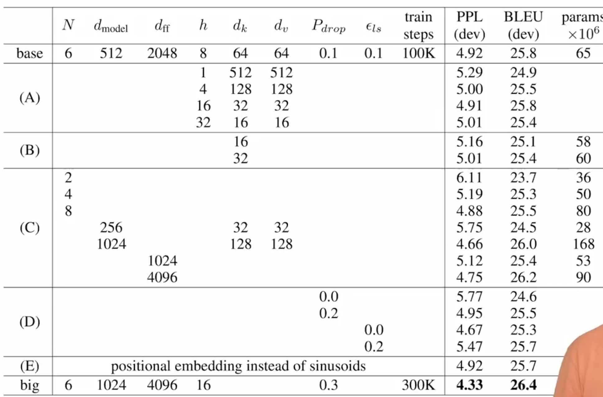
模型参数相对来说还是比较简单的， 基本上能调的就是要多少个层N，你的模型有多宽，以及你有多少个头h，其他的参数基本上都可以按比例算出，这也是Transformer架构的好处。BERT/GPT也基本上是把这个架构拿过去然后调了一下这些参数。
7. 评价
文章写的比较简单，没有太多写作技巧，基本上就是说提出了什么东西，和CNN/RNN比是什么样子，最后的实验结果是什么东西。这个写法并不推荐，因为对于一篇文章来说，你需要讲好一个故事，让读者有代入感，能够说服打动读者。
写作建议：篇幅限制情况下，可以选择把东西减少一点，甚至把一些不那么重要的东西放到附录里，在正文里还是要讲个故事说为什么要做这件事情，你的设计理念是什么，你对整个文章的一些思考是什么，这样会让大家觉得你的文章更有深度一些。
对于Transformer本身，不止能够用在机器翻译上，也能够用在几乎所有的NLP任务上，后续的工作BERT、GPT让大家能够训练很大的易训的模型，能够极大地提升所有NLP任务里的性能，有点像CNN对整个计算机视觉的改变（能够训练一个大的CNN模型使得别的任务也能够从中受益，CNN给计算机视觉的研究者提供了一个同样的框架，使得只要会CNN就行了，不需要去管以前跟任务相关的那么多的专业知识，例如做特征提取、对整个任务怎么建模），Transformer也是一样的，之前要做各种数据文本的预处理，要根据NLP的任务设计不一样的架构，现在不需要了，在Transformer架构上就能在各个任务上做出非常好的成绩，训练变得更加简单。不止NLP，在图片、语音、视频上取得了很大的进展，这是非常有影响力的事情，大家发现同样一个模型在所有领域都能用，让所有语言变得一样了。人对世界的感知是多模态的，Transformer能够把这些所有的不同的数据都融合起来，因为大家都用一个同样的架构抽取特征的话，就可以抽到一个同样的语义空间，使得我们可以用文本、图片、语音、视频训练更好更大的模型。
Attention的主要作用是把整个序列的信息聚合起来，但后面的MLP和残差连接是缺一不可，如果把这些去掉，Attention基本上什么东西都训练不出来。Attention根本不会对数据的顺序做建模，为什么能够打赢RNN？RNN能够显式地建模序列信息，理论上应该比MLP的效果好，现在大家觉得Attention用了一个更广泛的归纳偏置，使得它能够处理一些更一般化的东西。Attention并没有做任何空间上的假设，也能够跟CNN甚至比CNN取得更好的结果，但是它的代价是因为它的假设更加一般，所以对数据里面抓取信息的能力变差了，以至于需要使用更多的数据、更大的模型才能训练出你要的效果。